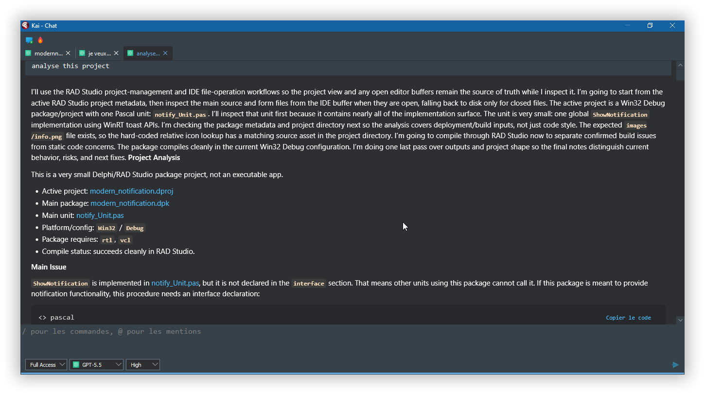
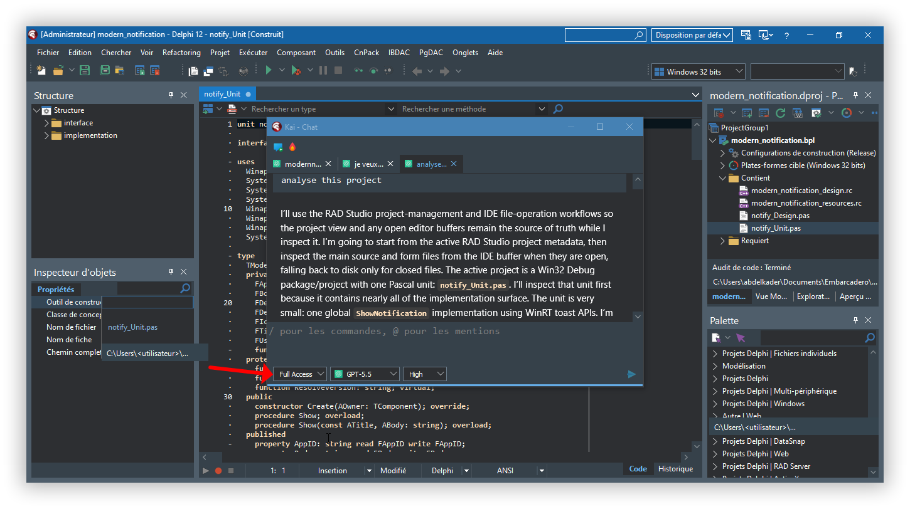

Projet : modern_notification
Objectif : creer un composant Delphi/VCL affichant des notifications Windows 10/11 avec icones PNG incorporees dans le BPL.
KAI est le nouvel assistant integre a RAD Studio pour accompagner le developpeur directement dans son environnement Delphi. Son interet principal est de travailler avec le projet ouvert dans l'IDE : il peut analyser le package actif, lire les fichiers ouverts, respecter les modifications non sauvegardees, ajouter des fichiers au projet et lancer les compilations.
Dans ce projet, KAI a ete utilise comme assistant de developpement pour transformer une simple procedure de notification en composant Delphi installable, avec ressources integrees, editeurs design-time, icones de palette et rapport de suivi.
applyEdit, sans reecrire inutilement tout le projet.addFileToProject.compileProjects.| Outil KAI | Utilisation dans le projet |
|---|---|
getProjectInfo |
Identifier le projet actif, la plateforme, la configuration, le type de framework et la liste des fichiers du package. |
listOpenFiles |
Savoir quels fichiers etaient ouverts dans RAD Studio avant lecture ou modification. |
getEditorContent / getEditorLines |
Lire le contenu reel des buffers IDE, y compris les changements non sauvegardes. |
getModificationStatus |
Verifier si un fichier etait ouvert et modifie avant d'appliquer une edition. |
setEditorContent |
Remplacer l'unite runtime initiale lorsque le composant a ete cree. |
applyEdit |
Appliquer des modifications ciblees dans les fichiers ouverts par l'IDE, notamment notify_Unit.pas et modern_notification.dpk. |
addFileToProject |
Ajouter les nouveaux fichiers au projet RAD Studio : unite design-time et fichiers ressources. |
compileProjects |
Compiler regulierement le package pour verifier chaque etape. |
Pour les fichiers sources ouverts dans RAD Studio, la modification a ete faite avec les outils KAI de l'IDE,
principalement applyEdit pour les changements cibles et setEditorContent pour les remplacements complets.
Cette methode permet de modifier le buffer de l'editeur sans perdre les changements non sauvegardes.
PowerShell a ete utilise en complement, mais pas comme outil principal pour modifier les sources ouvertes dans l'IDE. Il a servi aux operations systeme et aux controles autour du projet.
| Outil | Role exact dans ce projet |
|---|---|
KAI applyEdit |
Modifier une portion precise d'un fichier ouvert dans RAD Studio, par exemple dans notify_Unit.pas ou modern_notification.dpk. |
KAI setEditorContent |
Remplacer completement le contenu d'un fichier ouvert lorsque c'etait plus simple et controle, notamment pour les petits fichiers de ressources. |
KAI addFileToProject |
Declarer une nouvelle unite ou ressource dans le projet RAD Studio. |
PowerShell |
Lister les fichiers, verifier les dimensions des images, generer des bitmaps intermediaires, verifier les ressources du BPL, anonymiser une capture et convertir le HTML en PDF. |
Les captures suivantes proviennent du dossier shots. Elles documentent visuellement l'utilisation
de KAI pendant la creation et l'analyse du composant dans RAD Studio.


Cette section reprend la discussion fonctionnelle qui a guide la construction du projet. Elle ne liste pas chaque appel technique en detail, mais elle conserve les demandes du developpeur, les decisions prises avec KAI et les validations effectuees.
| Etape | Demande du developpeur | Reponse / action realisee avec KAI |
|---|---|---|
| 1 | Analyser le projet existant. | KAI a lu les metadonnees du projet actif, les fichiers ouverts et l'unite principale. Le projet a ete identifie comme un package Delphi contenant une procedure toast initiale. |
| 2 | Creer un composant Delphi affichant une notification Windows 10/11 avec grande icone. | Creation de TModernNotification, ajout des proprietes publiees, methode Show, procedure globale ShowNotification et enregistrement dans la palette. |
| 3 | Incorporer info.png dans le BPL. |
Creation de modern_notification_resources.rc, liaison de la ressource au package et extraction temporaire de la ressource PNG au moment d'afficher le toast. |
| 4 | Permettre une icone developpeur 64x64, sinon utiliser l'icone incorporee. | La resolution d'icone a ete organisee pour privilegier IconFileName quand le fichier existe, puis retomber sur l'icone par defaut incorporee. |
| 5 | Ajouter notification.png comme petite icone du composant. |
Conversion en bitmap compatible palette Delphi et declaration d'une ressource TMODERNNOTIFICATION pour l'icone design-time. |
| 6 | Ajouter la propriete DefaultIcon. |
Ajout d'une propriete booleenne publiee, initialisee a True. Si elle vaut False, aucune icone incorporee n'est utilisee en fallback. |
| 7 | Utiliser une boite de dialogue pour le chemin d'icone, comme avec TImage. |
Creation de notify_Design.pas et d'un editeur de propriete pour IconFileName, avec bouton ... et TOpenDialog filtre sur les images. |
| 8 | Corriger l'icone par defaut et la petite icone du composant qui ne s'affichaient pas. | Correction du chargement de ressource avec FindClassHInstance(TModernNotification) et inclusion de la ressource design-time dans notify_Design.pas. |
| 9 | Expliquer l'utilite de UseLargeIcon. |
Clarification : cette propriete force l'image comme grande icone toast avec placement="appLogoOverride" et hint-crop="none". |
| 10 | Incorporer plus d'images PNG 64x64 du dossier images. |
Ajout d'une table d'icones incorporees, d'une propriete DefaultIconName et d'une liste deroulante design-time. |
| 11 | Ajouter les nouvelles images 64x64 du dossier images. |
Synchronisation de modern_notification_resources.rc et de la table EmbeddedIcons. Verification du BPL : 27 ressources MODERN_NOTIFICATION_ICON_*. |
| 12 | Nettoyer le code des fonctions inutilisees. | Controle des references, conservation des fonctions utilisees par les proprietes ou le design-time, suppression de deux unites inutiles : Winapi.WinRT et System.TypInfo. |
| 13 | Creer un rapport PDF detaille des etapes d'utilisation de KAI. | Generation d'un rapport HTML puis conversion en PDF avec Microsoft Edge headless. Compilation finale du package verifiee avant generation. |
Developpeur : analyse this project KAI : Inspection du projet actif, des fichiers ouverts et compilation de base. Developpeur : le but c'est de creer un composant delphi qui affiche une notification. KAI : Creation de TModernNotification, proprietes publiees et methode Show. Developpeur : je veux que info.png soit incorporee dans le bpl. KAI : Ajout d'une ressource RCDATA et extraction depuis le BPL. Developpeur : le developpeur peut utiliser une icone 64x64, sinon l'icone incorporee. KAI : Priorite a IconFileName, fallback sur l'icone incorporee. Developpeur : ajouter DefaultIcon true/false. KAI : Ajout de la propriete DefaultIcon et gestion de l'absence d'icone. Developpeur : pourquoi ne pas utiliser la boite de dialogue comme TImage ? KAI : Ajout d'un editeur de propriete design-time avec bouton "...". Developpeur : l'icone par defaut et la petite icone ne s'affichent pas. KAI : Correction du handle de module et de la ressource palette. Developpeur : incorporer plus d'images PNG 64x64. KAI : Ajout de DefaultIconName, liste deroulante et ressources multiples. Developpeur : nettoyer le code. KAI : Suppression des uses inutiles et recompilation. Developpeur : creer un rapport PDF. KAI : Generation du present rapport et conversion PDF.
Les sections suivantes decrivent les etapes techniques realisees apres l'analyse initiale : transformation en composant, gestion des notifications Windows, ressources incorporees, design-time, validations et maintenance.
La premiere etape a consiste a inspecter le package existant. KAI a identifie un projet package Delphi
contenant principalement notify_Unit.pas, modern_notification.dpk,
modern_notification.dproj et les ressources associees.
L'unite initiale contenait une procedure globale ShowNotification utilisant les API WinRT
TToastNotificationManager, IToastNotification et les templates Windows toast.
Cette procedure n'etait pas encore exposee comme composant installable.
KAI a ensuite compile le projet pour etablir une base de depart. La compilation initiale etait valide, ce qui a permis d'ajouter les fonctions progressivement avec une verification a chaque etape.
Le code runtime a ete restructure autour d'un composant non visuel :
type
TModernNotification = class(TComponent)
published
property AppID: string;
property Body: string;
property DefaultIcon: Boolean;
property DefaultIconName: string;
property IconFileName: string;
property Title: string;
property UseLargeIcon: Boolean;
property Version: string;
public
procedure Show; overload;
procedure Show(const ATitle, ABody: string); overload;
end;
KAI a remplace le contenu de notify_Unit.pas, puis a compile le package.
La procedure globale ShowNotification a ete conservee pour permettre une utilisation simple
sans deposer le composant sur une fiche.
Le composant construit un XML toast a partir des templates Windows :
ToastImageAndText02 lorsque l'icone existe.ToastText02 lorsqu'aucune icone ne doit etre affichee.
Les textes sont injectes dans les noeuds XML text. Si une image est utilisee,
elle est convertie en URI locale file:///... puis affectee au noeud image.
La propriete UseLargeIcon ajoute :
placement="appLogoOverride" hint-crop="none"
Cela permet d'obtenir une grande icone de notification dans le style Windows 10/11.
La demande suivante etait d'incorporer info.png dans le BPL.
Un fichier ressource modern_notification_resources.rc a ete ajoute au projet,
puis compile en modern_notification_resources.res.
Le code runtime extrait la ressource PNG dans le dossier temporaire de Windows, car les notifications toast
utilisent une URI de fichier pour les images locales. Le chargement de ressource utilise le handle du BPL
contenant la classe, et non un HInstance ambigu :
LModuleHandle := FindClassHInstance(TModernNotification); LResourceStream := TResourceStream.Create(LModuleHandle, ResourceName, RT_RCDATA);
Cette correction a ete necessaire pour que la ressource soit retrouvee correctement apres installation du package.
Le composant prend en charge deux strategies :
IconFileName : le developpeur choisit une image externe, par exemple une icone PNG 64x64.DefaultIcon et DefaultIconName : le composant utilise une icone incorporee dans le BPL.La resolution finale suit cet ordre :
IconFileName pointe vers un fichier existant, ce fichier est utilise.DefaultIcon=False, aucune icone n'est utilisee.DefaultIconName est extraite et utilisee.button-info.
Les images PNG 64x64 du dossier images ont ete declarees comme ressources RCDATA.
Le composant garde une table interne associant :
DefaultIconName,Exemples de noms exposes dans la liste :
button-cancel button-download button-error button-help button-info button-ok button-refresh button-trend-down button-update chart-pie-2d chart-pie-2d-exploded charts charts-colors emoticon-happy emoticon-sad emoticon-smile find fire gift internet light-bulb new on-off reminder save user-profile
La liste est fournie au design-time par GetModernNotificationDefaultIconNames.
Une unite separee notify_Design.pas a ete creee pour isoler le code necessitant
designide, DesignIntf, DesignEditors et ToolsAPI.
Cette unite effectue l'enregistrement du composant :
RegisterComponents('Modern Notification', [TModernNotification]);
Elle ajoute aussi les editeurs de proprietes :
IconFileName : bouton ... ouvrant une boite TOpenDialog.DefaultIconName : liste deroulante des icones incorporees.Version : propriete en lecture seule.
Le package a donc ete mis a jour avec la dependance designide et l'unite
notify_Design.pas.
Une ressource design-time modern_notification_design.rc a ete ajoutee pour l'icone du composant :
TMODERNNOTIFICATION BITMAP "images\\flag-green.bmp" TMODERNNOTIFICATION_32 BITMAP "images\\flag-green_32.bmp"
TMODERNNOTIFICATION est le nom attendu par RAD Studio pour associer un bitmap a la classe
TModernNotification. La ressource TMODERNNOTIFICATION_32 est utilisee pour le splash/plugin bitmap.
L'inclusion de la ressource design-time est faite dans notify_Design.pas :
{$R 'modern_notification_design.res'}
Un passage de nettoyage a ete effectue apres les ajouts principaux. Les fonctions encore presentes sont utilisees directement ou indirectement par le composant, les proprietes publiees ou l'initialisation design-time.
Les unites inutiles detectees ont ete supprimees :
Winapi.WinRT retire de notify_Unit.pas.System.TypInfo retire de notify_Design.pas.Apres nettoyage, KAI a relance une compilation complete du package.
Les validations ont ete repetees a chaque etape importante avec compileProjects.
L'etat final releve pour ce rapport est :
| Projet | modern_notification.dproj |
|---|---|
| Framework | VCL |
| Plateforme | Win32 |
| Configuration | Release |
| Compilation | OK, sans message |
ModernNotification1.Title := 'Information'; ModernNotification1.Body := 'Traitement termine'; ModernNotification1.DefaultIcon := True; ModernNotification1.DefaultIconName := 'button-info'; ModernNotification1.Show;
ModernNotification1.Title := 'Alerte'; ModernNotification1.Body := 'Operation terminee avec erreur'; ModernNotification1.IconFileName := 'C:\Images\error_64.png'; ModernNotification1.Show;
ShowNotification('Information', 'Traitement termine');
| Fichier | Role |
|---|---|
notify_Unit.pas |
Code runtime du composant, affichage toast, extraction des icones incorporees, proprietes publiees. |
notify_Design.pas |
Enregistrement design-time, editeurs de proprietes, icone/splash design-time. |
modern_notification_resources.rc |
Declarations des PNG 64x64 comme ressources RCDATA. |
modern_notification_design.rc |
Bitmap d'icone du composant et bitmap splash/plugin. |
modern_notification.dpk |
Package Delphi contenant les unites runtime/design-time et la dependance designide. |
modern_notification.dproj |
Projet RAD Studio avec les references aux unites et ressources. |
images, declarer la ressource dans le .rc, puis ajouter l'entree correspondante dans EmbeddedIcons.